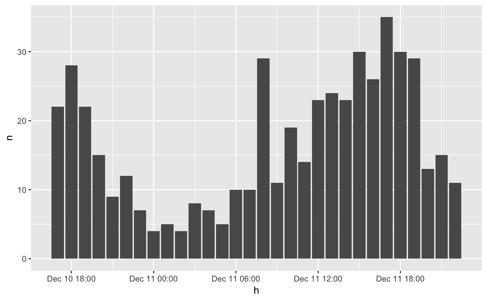

After applying thicken all the observations of a period are mapped
to a single time point. This function will convert a datetime variable to
a character vector that reflects the period, instead of a single time point.
strftime is used to format the start and the end of the interval.
format_interval(x, start_format = "%Y-%m-%d", end_format = start_format, sep = " ", end_offset = 0, units_to_last = NULL)
| x | A vector of class |
|---|---|
| start_format | String to format the start values of each period, to be used
in |
| end_format | String to format the end values of each period, to be used
in |
| sep | Character string that separates the |
| end_offset | Units in days if |
| units_to_last | To determine the formatting of the last value in |
A character vector showing the interval.
The end of the periods will be determined by the next unique value
in x. It does so without regarding the interval of x. If a specific
interval is desired, thicken and / or pad should first be
applied to create an equally spaced datetime variable.
library(dplyr) library(ggplot2) plot_set <- emergency %>% head(500) %>% thicken("hour", "h") %>% count(h) # this will show the data on the full hour ggplot(plot_set, aes(h, n)) + geom_col()# adding a character to indicate the hours of the interval. plot_set %>% mutate(h_int = format_interval(h, "%H", sep = "-"))#> # A tibble: 30 x 3 #> h n h_int #> <dttm> <int> <chr> #> 1 2015-12-10 17:00:00 22 17-18 #> 2 2015-12-10 18:00:00 28 18-19 #> 3 2015-12-10 19:00:00 22 19-20 #> 4 2015-12-10 20:00:00 15 20-21 #> 5 2015-12-10 21:00:00 9 21-22 #> 6 2015-12-10 22:00:00 12 22-23 #> 7 2015-12-10 23:00:00 7 23-00 #> 8 2015-12-11 00:00:00 4 00-01 #> 9 2015-12-11 01:00:00 5 01-02 #> 10 2015-12-11 02:00:00 4 02-03 #> # … with 20 more rows